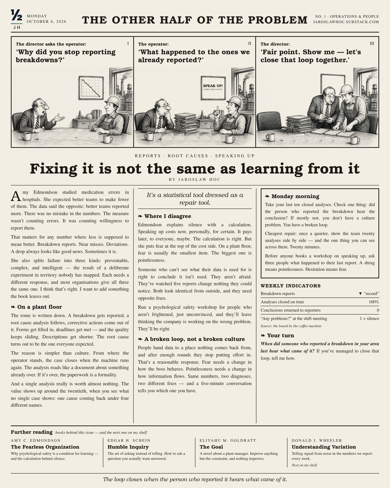

Technical solutions fail for reasons that are not technical.
I write about the other half: the measurement system, where the constraint actually sits, and what pays off for the people expected to run the solution.
Jarosław Hoc · nearly 30 years in continuous process manufacturing · Grupa Żywiec (HEINEKEN)

No. 1 · 6 October 2026
Fixing it is not the same as learning from it
Fewer breakdown reports looks like good news. Sometimes it is. More often, people have stopped believing a report leads anywhere. Reading: Amy Edmondson, The Fearless Organization.
Monday morning
Read on SubstackAll issues →- Take your last ten closed analyses. Check one thing: did the reporter hear the conclusion?
- Once a quarter, show the team twenty analyses side by side. Twenty minutes.
- Before anyone books a workshop on speaking up, ask three people what happened to their last report.
One piece every two weeks. Monday morning.
A book, a mechanism from the plant floor and one thing to do. In Polish and English. No spam, unsubscribe in one click.
Writing
The first piece comes out in October 2026. I publish on Substack; the list will live here.